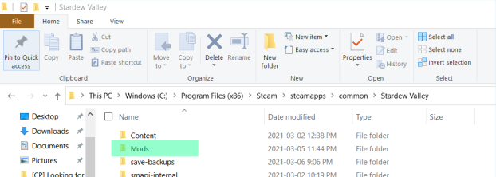
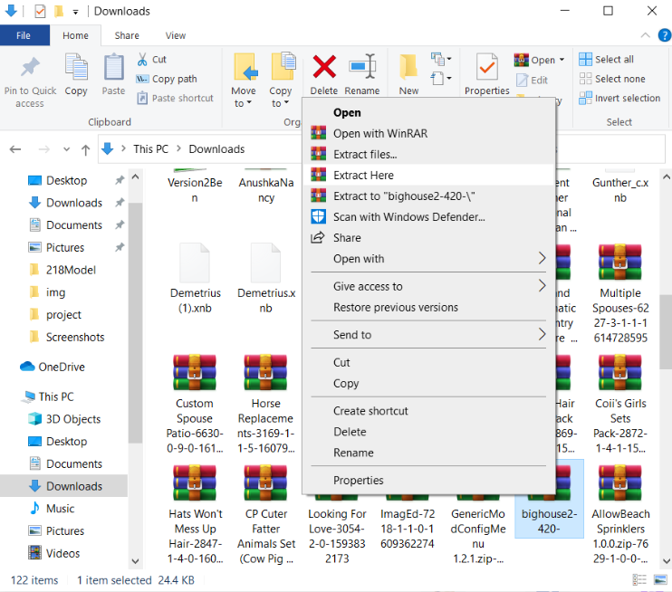
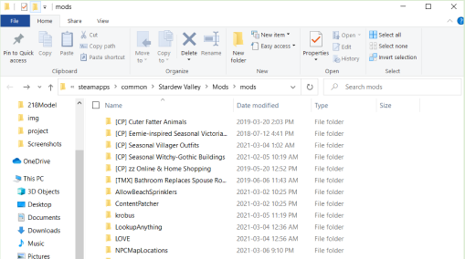
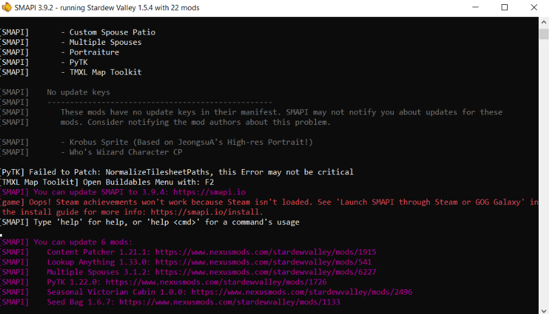

find the stardew folder, C drive> Program files (x86)> steam > steamapps > common > Stardew Valley > mods
open up the folder and drag your mods there
you can do this before or after, however you normally extract and move files
make sure all your mods are extracted
make sure it is SMAPI and not Stardew
this screen will pop up along with the game screen. Refer to this to trouble shoot. It will tell you whats running, needs an update or is not working